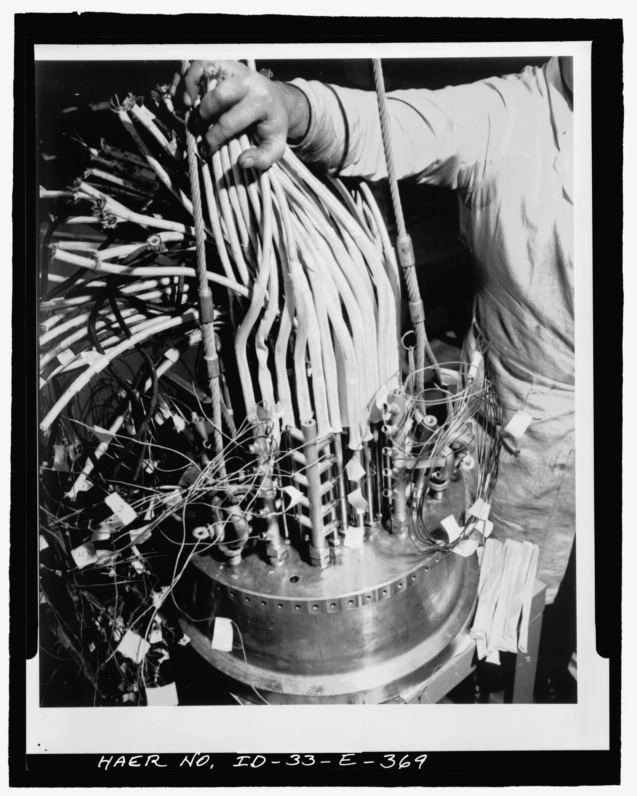
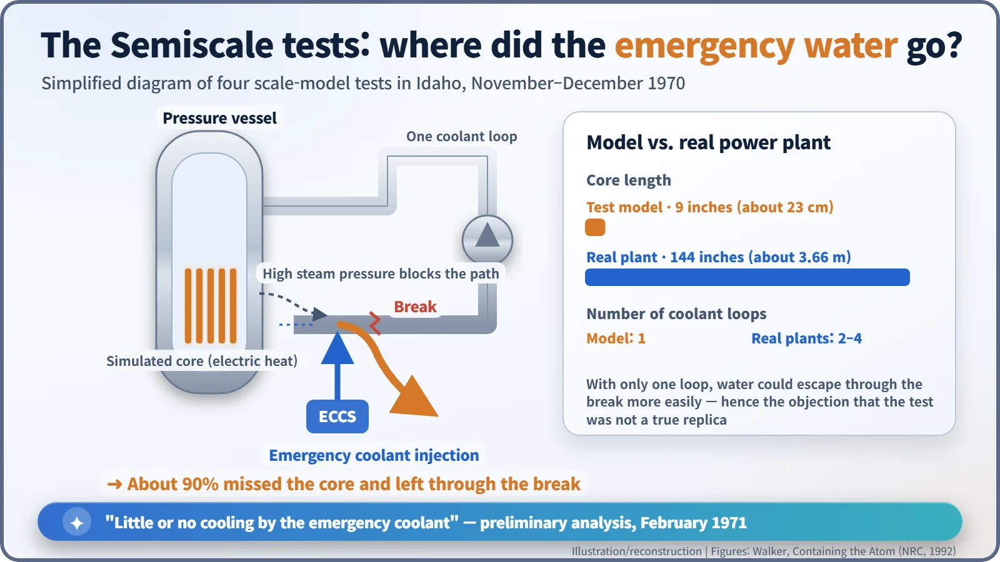
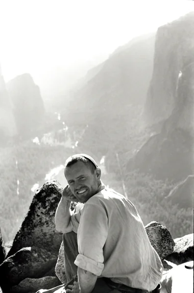

Nuclear History · 237
Will the Emergency Water Get There in Time? — The ECCS Hearings and the Birth of the 2,200°F Rule (1971–1973)
In the Semiscale tests about 90 percent of the emergency water ran out of the break; the argument that followed gave the world a lasting safety rule.
In 1970–71, small-scale tests in Idaho suggested that a reactor's emergency core cooling system (ECCS) might send most of its water straight out of a broken pipe. The Atomic Energy Commission issued interim rules, critics challenged them, and a 125-day public hearing followed. It ended with the rule engineers still use today: fuel cladding must stay below 2,200°F.
"Little or no cooling"
"Preliminary analysis of these tests indicates little or no cooling by the emergency coolant." That dry sentence came from a February 1971 report by the Idaho Nuclear Corporation, the contractor running safety experiments at the National Reactor Testing Station in Idaho. It concerned the emergency core cooling system (ECCS), the equipment meant to save a reactor at the worst possible moment, when a major pipe breaks. In a set of small-scale tests it had barely worked. That sentence set off a long and bitter technical argument over American reactor safety, one that ended with a number engineers still quote today: 2,200°F. [1]
When the last line of defence moved
By the late 1960s, U.S. power reactors were growing fast. The bigger they got, the harder it was to promise that a containment building could hold everything in if the core ever melted. So the safety thinking of the Atomic Energy Commission (AEC) shifted from "contain the melt" to "don't let it melt in the first place". The ECCS became, in effect, the last line of defence. [1]
The accident it was built for is the loss-of-coolant accident, or LOCA: a large pipe in the reactor's cooling circuit breaks and the water rushes out. Shutting down the chain reaction does not switch off the heat, because the radioactive fuel keeps producing "decay heat". Without water, the metal tubes that hold the fuel (the cladding) heat up and can turn brittle and break apart. The ECCS is the reactor's built-in fire brigade: pumps and tanks that flood the core with water again.

The day the water took a shortcut
In November and December 1970, researchers in Idaho ran four "Semiscale" tests. The simulated core was 9 inches (about 23 cm) long; a real power-reactor core was 144 inches (about 3.66 m), sixteen times longer. They heated the model core electrically, let the cooling water escape, then injected emergency coolant. To their surprise, the high steam pressure created by the escaping coolant blocked the way. About 90 percent of the emergency water never reached the core. It flowed straight out of the same break that had caused the accident. [1]

There was a fair objection. Real plants had two to four coolant loops; the test rig had only one, which made it much easier for water to escape through the break. Still, the results exposed how little anyone could be sure of. As one scientist on the experiments put it: "Although we feel pretty sure we can flood the core, our difficulty is that we can't quantify the margin of safety we have." [1]
The AEC tried to keep the matter in-house, but on 26 May 1971 the Washington Post put the story on its front page. On 19 June 1971 the AEC hurriedly announced "Interim Acceptance Criteria" for the ECCS (published in the Federal Register on 29 June). Fuel cladding was not to exceed 2,300°F (about 1,260°C), and designers had to assume that emergency water would bypass the core during the first, violent "blowdown" phase of the accident. [1] [4]
125 days and 22,000 pages
The interim criteria did not end the argument. In July 1971 the Union of Concerned Scientists (UCS), founded in 1969, published a report concluding that emergency cooling systems were "likely to fail". In December, the licensing board for the Indian Point 2 plant in New York said it lacked enough information on the ECCS question to grant a licence. The same fight threatened to break out at every plant, but the AEC had already decided, on 30 November 1971, to settle the issue once and for all in a nationwide rulemaking hearing. [1] [4]

The hearings opened in January 1972. UCS served as the technical arm of the Consolidated National Intervenors, a coalition of about 60 groups and individuals. Its faces were Henry W. Kendall (1926–1999), an MIT physicist who would share the 1990 Nobel Prize in Physics, and Daniel F. Ford, a young economics graduate in his twenties who acted as the coalition's "technical interrogator". [2] [6]
According to the account in Advice and Dissent (1974) by physicists Joel Primack and Frank von Hippel, the hearings brought internal doubts into the open. An AEC systems-performance specialist, Robert Colmar, called the interim criteria "a triumph of hope over reason", and Oak Ridge metallurgist P. L. Rittenhouse read into the record the names of 28 colleagues who, he said, shared his concerns. On the other side, most reactor manufacturers argued that the interim criteria were already too conservative. In all, the hearings ran for 125 days and produced more than 22,000 pages of transcript. [2] [4]
From 2,300 to 2,200
The AEC's regulatory staff filed its concluding statement on 16 April 1973, and the Commission issued its decision on 28 December 1973. The new rule, 10 CFR 50.46, appeared in the Federal Register on 4 January 1974 with five conditions. A new Appendix K set out how the calculations had to be done. [3] [5]
- Peak cladding temperature no higher than 2,200°F (about 1,204°C)
- Cladding oxidation no more than 17 percent of its thickness
- Hydrogen generation no more than 1 percent of the maximum possible
- A core that stays in a coolable shape
- Long-term cooling to carry away decay heat
The temperature limit had dropped by 100°F, and the oxidation limit was new, both grounded in experiments on how zirconium cladding becomes brittle.
![Timeline from the Semiscale tests in late 1970 to the final decision on 28 December 1973, with the hearing period marked as 125 hearing days and more than 22,000 transcript pages, above a table comparing the 1971 interim criteria with the final rule: peak cladding temperature 2,300 versus 2,200 degrees Fahrenheit, no oxidation limit versus 17 percent, 1 percent reaction versus 1 percent hydrogen, cooling before embrittlement versus a coolable geometry, and an assumed bypass versus Appendix K models](../../assets/images/history/237-eccs-hearings/fig2-criteria.webp)
A number that outlived the quarrel
Reactions split. Kendall called the changes largely "cosmetic"; industry thought they went too far. The historian J. Samuel Walker concludes that the AEC damaged its own credibility by trying to keep unfavourable test results out of view, one of the reasons doubts grew about a single agency both promoting and regulating nuclear power. [1] [2]
The numbers, though, lasted. A 1988 amendment allowed "best-estimate" calculations combined with a quantified allowance for uncertainty, but 2,200°F and 17 percent remain in the U.S. rule today and have shaped light-water reactor safety analysis in many countries. A long public argument delayed decisions, but it also left the standard on firmer ground. [5]